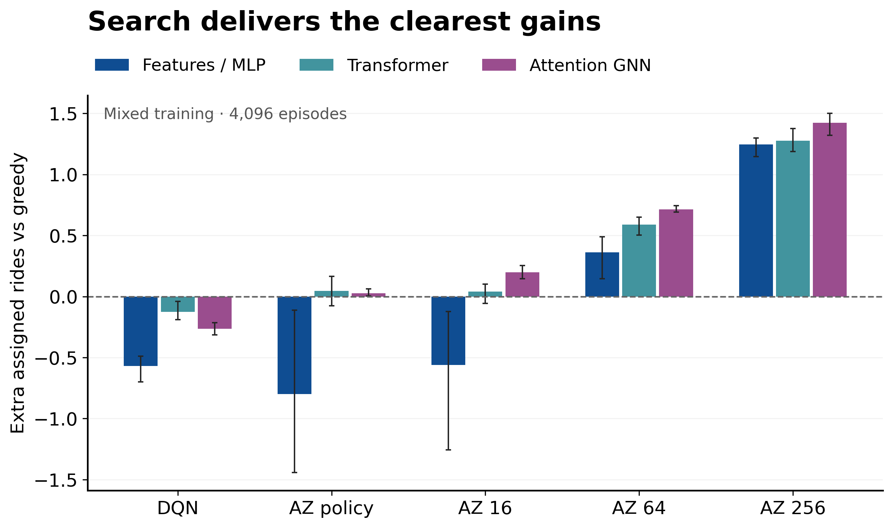

Reinforcement learning · An experimental study
Can reinforcement learning assign more rides than greedy?
A practical experiment with DQN, AlphaZero-style search, and three ways to represent a fleet
A booking arrives. Two vans can serve it. One insertion adds slightly less driving time, so we choose that van.
It sounds reasonable. But what if a later request can only use that same van?
We started this research with a simple question: can a learned decision-maker recognize these future conflicts and assign more rides than a greedy algorithm?
The answer was encouraging, with a qualification. Our AlphaZero-style approach, which combines a neural network with search, consistently improved ride counts on the synthetic scenarios we tested. DQN learned, but did not become a broadly better alternative to greedy. The most useful lesson was understanding what search contributed, and what learning alone did not achieve.
A small decision with a long consequence
Consider one van and three requests. An early request needs a long trip. Two requests processed later need short trips during that same period. The long trip conflicts with both short trips, while the two short trips can be served together.
Accepting the first request produces one assigned ride. Rejecting it leaves room for two.
A rejection can therefore be the better assignment decision. But rejecting every long ride would also be a mistake: sometimes there are no conflicting requests worth preserving capacity for. We need to distinguish those situations.
Our objective reflects this tradeoff: assign as many rides as possible, then minimize van time among equally good assignments. A lower-cost plan can help preserve capacity, but saving driving time is secondary to serving another ride.
We initially explored learning which local-search operation to run inside an optimizer. Those experiments did not establish a reliable advantage. To study the decision more directly, we changed the formulation: process one request at a time and choose a van or rejection.
What the agent knows and controls
Each scenario contains 60 requests and eight vans. The agent considers requests in a fixed order. For the current request, its actions are the feasible vans plus rejection.
An existing assignment solver checks whether a van can serve the request and constructs the insertion. The network chooses between these candidates. Once a request is accepted, the agent cannot move or remove it later.
There is an important detail: the final experiment exposes all future requests to the agent. This is advance-booking planning. Vans have schedules but do not physically move while we make decisions. We are not claiming to predict unknown real-time demand.
That makes the experiment a useful test of planning: given the same known future, which method uses it effectively?
Greedy provides a strong, inexpensive baseline. It always accepts when possible, selecting the feasible van with the smallest added van time. It does not explicitly examine what that choice will do to later requests.
DQN learns a score for each choice
A Deep Q-Network, or DQN, estimates how much total reward an action will lead to, including its future consequences. This idea comes from deep Q-learning.
In our setting, it asks: “If I assign this request to van A, how good will the rest of the plan be?” It asks the same question for van B and for rejection. At evaluation time, it chooses the legal action with the largest predicted score.
How does it learn those scores? During simulated booking episodes, the agent tries actions and stores the resulting decisions in a replay buffer. Training samples older decisions from that buffer. For each sampled action, the target combines rewards actually observed over the next few steps with a network estimate of what remains afterward. The loss pulls the action's prediction toward that target.
Our implementation uses five-step Double DQN: it combines five observed steps with an estimate of the remaining return. One network selects the future action; a slower-changing target network evaluates it, helping reduce overly optimistic estimates. The key idea stays the same: learn the future consequences well enough to choose directly, without searching a tree at decision time.
One episode means planning an entire 60-request scenario. It is one practice problem, not one neural-network update.
AlphaZero adds a chance to think before acting
DQN must rely on its predicted action scores. Our AlphaZero-style approach combines learned guidance with explicit lookahead.
The network has two outputs. The policy suggests which actions look promising. The value estimates how much reward can still be obtained from the current state. They share a state representation; they need not be two separate networks.
Before committing to a booking decision, Monte Carlo Tree Search (MCTS) repeatedly explores possible continuations:
- Choose a branch to investigate. The choice balances the return found so far with an exploration bonus. The policy gives larger bonuses to promising actions, while visit counts reduce the bonus for branches already explored heavily.
- Simulate another booking decision. The assignment solver produces the resulting plan, and the next request becomes current.
- Estimate the unexplored future. At a newly reached state, the value head supplies an estimate, so search usually stops before finishing the entire scenario.
- Update the path. The estimated future reward, together with the rewards along the path, updates the actions that led there.
At evaluation time, we execute the root action visited most often during search. The policy influences the search; it does not directly dictate the final action.
A budget of 256 simulations means repeating this exploration 256 times for the current decision. It does not mean exploring 256 levels deep or opening the whole tree. The paths can have different depths. Although the name is Monte Carlo Tree Search, our guided version uses neural leaf estimates rather than random rollouts to the end.
Training closes the loop. Search produces a distribution of action visits, which becomes the policy's training target. After the episode finishes, the reward actually obtained from each state onward becomes the value target. A better network can guide later searches more effectively, and those searches generate new training examples.
We trained with 64 simulations per decision, then evaluated the same networks using policy-only decisions or search budgets of 16, 64, and 256. This lets us separate the effect of training from the amount of thinking allowed at decision time.
Giving the network a useful picture of the fleet
The learning algorithm is only part of the design. We also need a representation that makes future conflicts visible.
We compared three approaches:
| Representation | Intuition |
|---|---|
| Features and an MLP | Give the network a compact dashboard: the current request, candidate van, added van time, route statistics, and summaries of future demand. |
| Transformer | Represent requests, vans, and scheduled stops as individual tokens. Attention lets each token gather relevant information from the others. |
| Attention GNN | Connect those objects through explicit relationships, such as a stop belonging to a van or a request being eligible for it. Information first travels along these graph connections. |
For example, when evaluating van A, attention can bring information about requests that may compete for that van into its action representation. A graph makes some of those relationships explicit before the final decision is scored.
Both the Transformer and GNN use attention to build a representation for each candidate action. The GNN is therefore an attention-based graph network. Its distinctive feature is which objects can exchange messages during the graph layers.
The engineered features compress information that the other two retain as separate objects. So this comparison tests practical representation choices, not architecture alone with perfectly identical information.
Testing beyond one convenient example
We used four synthetic scenario families: geographically clustered demand, requests restricted to particular vans, staggered van shifts, and the long-trip-versus-short-trips bottleneck described earlier. Bottleneck scenarios included controls where accepting the long trip was appropriate, so “always reject long trips” was not a solution.
We trained both specialists on individual families and mixed models on all four. Each configuration used three training seeds. Final comparisons used 200 held-out scenarios per family, and separate validation scenarios tracked learning during training.
We fixed the evaluation checkpoints in advance. We also kept disappointing seeds in the results. Otherwise, choosing a favorable training run could easily look like an algorithmic improvement.
What worked
The clearest gains came from AlphaZero-style search with 256 simulations per decision. It improved average held-out ride count in every final family, representation, and training-seed comparison, for both specialist and mixed training.
As one representative result, the mixed GNN model increased the average from 37.13 to 38.55 assigned rides per scenario: about 1.42 additional rides, or 3.8%, averaged over three seeds and the four equally weighted families.


DQN generally finished near or below greedy. The learned AlphaZero policy alone also captured only a small part of the search benefit. For the mixed GNN, policy-only gained about 0.03 rides, compared with 0.72 at 64 simulations and 1.42 at 256.
There was no universal representation winner. GNN had the highest final mixed average at the largest search budget, but other representations won in particular families or training conditions. Mixing all families during training was useful in some comparisons and harmful in others.
Did learning help, or did we just search more?
A trained search beating greedy does not, by itself, prove that training was useful. Search is already doing additional work.
We therefore also compared trained and untrained networks with the same search budget on the same validation scenarios. At 256 simulations, training improved 35 of 36 specialist comparisons and 33 of 36 mixed family-by-seed comparisons. That supports a real contribution from learned guidance, although this exact initialized-versus-trained comparison still needs confirmation on the held-out test set.

DQN also improved greatly over its initial behavior. But learning from initialization and beating greedy are different tests. Longer training did not reliably close the gap: some DQN configurations improved, while others got worse.
In a smaller pilot on two families, we also tried learning a state value, V(s), instead of action values, Q(s,a). The agent simulated each legal next state and chose the action with the highest immediate reward plus predicted future value. We trained these networks using either a reward-plus-future-estimate target (Bellman training) or the return actually observed through the end of the episode (Monte Carlo training). Neither approach produced a broad advantage over greedy in that pilot.
Our interpretation is that precise decision ranking matters more than a plausible-looking value estimate. Two actions may have similar total returns, yet reversing their order can lose a ride. This is a hypothesis about the remaining difficulty, not a complete diagnosis of every failed model. Likewise, rejecting feasible requests is not evidence of good planning unless those rejections improve the eventual outcome.
What this tells us
The strongest finding is that learned guidance combined with explicit search can improve booking decisions in this known-future setting. Learning a direct controller was harder: a network could improve substantially during training without surpassing the simple greedy baseline.
The gain has a price. Search repeatedly calls the assignment solver, and the strongest configuration is substantially slower. We have not yet established an advantage over other lookahead methods at equal runtime. Nor do synthetic booking results establish a production improvement. Van-time improvements were also mixed when methods tied on ride count.
We still cannot confidently attribute the benefit to the learned value head alone. Earlier diagnostics suggested that a trained policy prior with a simple value estimate retained much of the benefit. Separating those contributions is a focused next experiment.
For this study, the useful lesson is concrete: the formulation of the decision problem, the information exposed to the agent, and the amount of search available all shaped the result. The successful approach gave the model both a view of upcoming demand and a way to test its choices before committing.
For more background, see Policies, Values, and Planning and the Transformer guide. Figures follow the conventions in figures4papers.